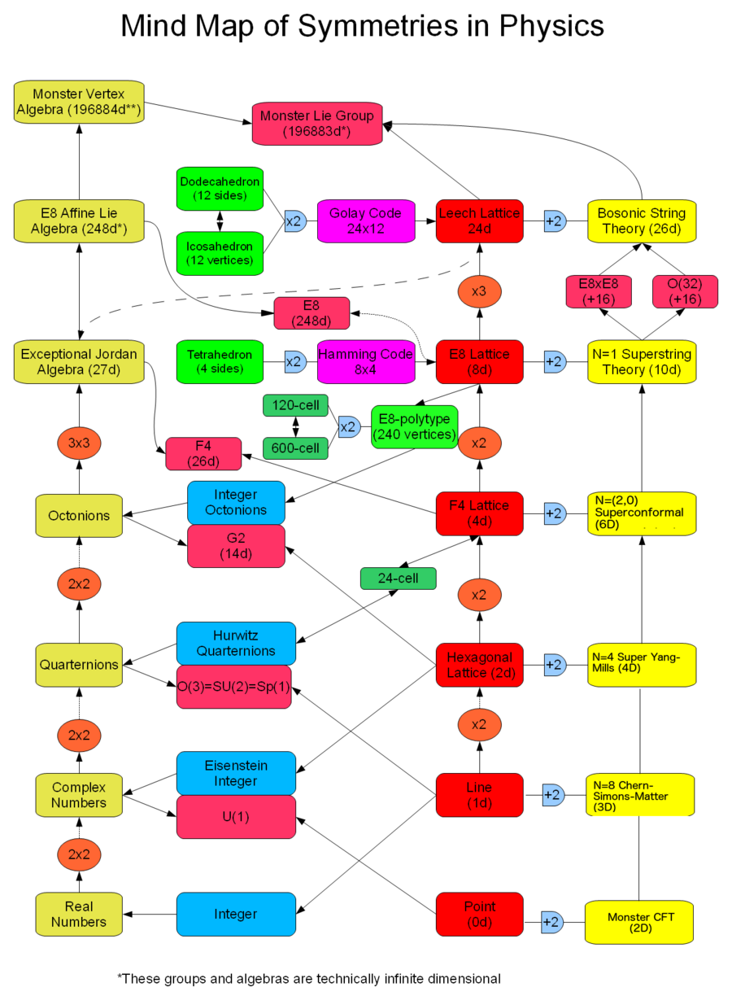

Introduction
This is a small experiment in type theory. The primary aim is to explore how to format and express mathematical equations using dependent type theory. This may be used as inspiration for others.
Why?
By formalising the mathematical theories using a strict type system helps to give a better understanding of some abstract concepts. The hope is that by basing everything on dependent type theory it makes things more consistent and more easy to inspect.
Types
Many computer algebra systems are biassed towards the real and complex number fields as they are mainly used for calculating integrals or solving equations. They may not be strongly typed at all.
Thoughts
Types can be extended indefinitely but it is interesting to think about what types are needed to construct the objects to descibe the physics of the Universe.
Levels
Mathematics and physics is manipulated in various levels of abstraction. It is important to be able to manipulate objects on every level of abstraction and convert betwen levels. Once the rules are proven we are free to use them without reference to the lower levels.
Proofs
While we can use this javascript library to do proofs. Primarily we are more interested in finding a way to represent high types.
Neural Networks
Dependent types are also useful for neural networks, since, for example the input and output types can be parameterised by the width, height and batch numbers.

$$\sqrt{1}$$